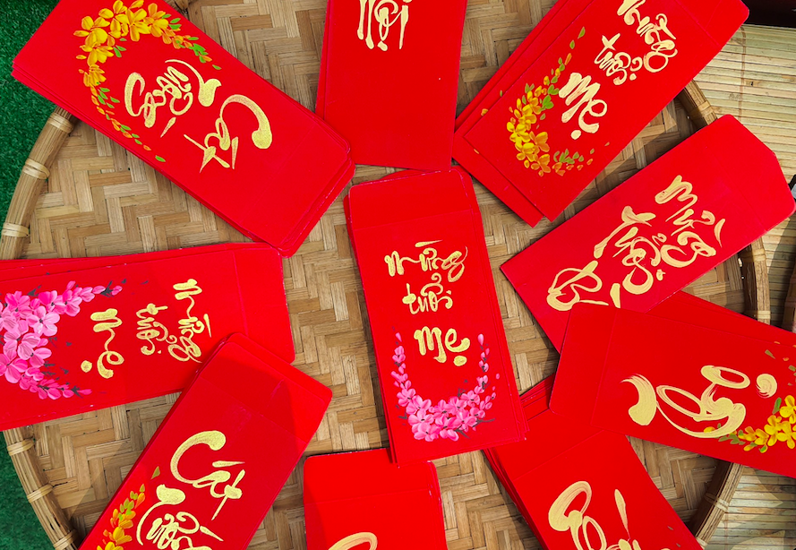
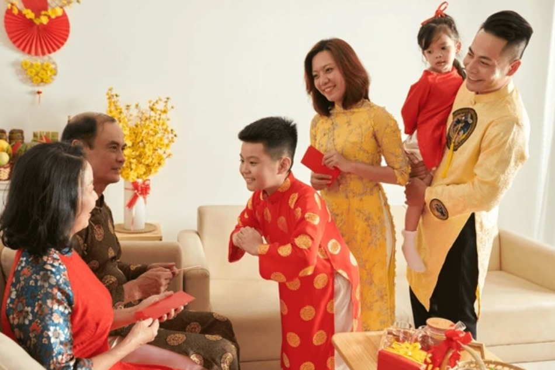

Không khí Tết ấm áp, gắn kết yêu thương
Gìn giữ phong tục tốt đẹp của dân tộc
Hy vọng – may mắn – thành công
Gói bánh chưng, lì xì đầu năm và chúc Tết là những phong tục truyền thống tiêu biểu của người Việt.
Gói bánh chưng là phong tục truyền thống lâu đời của người Việt trong dịp Tết Nguyên Đán. Bánh chưng tượng trưng cho đất trời, thể hiện lòng biết ơn đối với tổ tiên. Việc cùng nhau gói bánh, nấu bánh trong những ngày cuối năm tạo nên không khí ấm áp, giúp các thành viên trong gia đình sum họp và gắn kết tình thân.

Lì xì là phong tục không thể thiếu trong ngày Tết của người Việt. Những phong bao đỏ mang ý nghĩa may mắn, tài lộc và bình an. Việc lì xì thể hiện sự quan tâm, lời chúc tốt đẹp của người lớn dành cho trẻ em và sự kính trọng đối với người cao tuổi.
Chúc Tết là nét đẹp văn hóa trong những ngày đầu năm mới. Mọi người thường đến thăm hỏi, gửi đến nhau những lời chúc sức khỏe, bình an và hạnh phúc. Phong tục này góp phần làm cho không khí Tết thêm vui tươi, đầm ấm và ý nghĩa.
